☕
คู่มือ CafeFlow
ระบบสั่งเองที่ตู้ · รับเงิน · ส่งครัว · เรียกคิว
1ติดตั้งระบบเจ้าของร้าน · ช่างที่มาติดตั้ง
2ใช้งานแต่ละหน้าเจ้าของ · ผู้จัดการ · แคชเชียร์
3งานเดินยังไงทุกคนควรอ่าน
4ใครทำอะไรอ่านเฉพาะหน้าของตัวเองก็พอ
พนักงานใหม่: อ่านบทที่ 4 (หน้าของตัวเอง) แล้วบทที่ 3 — ใช้เวลาไม่ถึง 10 นาที
1ติดตั้งระบบ
ทำครั้งเดียวตอนเปิดร้าน · ฉบับละเอียดสำหรับช่างอยู่ในไฟล์ INSTALL.md
ระบบหน้าตาเป็นยังไง
🖥️
เครื่องหลัก (1 เครื่อง)คอมที่เก็บข้อมูลทั้งร้าน เปิดทิ้งไว้ตลอด ทุกจอดึงข้อมูลจากเครื่องนี้📱
คีออสก์จอสัมผัสให้ลูกค้าสั่งและจ่ายเงินเอง มีกล้องไว้ส่องสลิป💵
แคชเชียร์รับเงินสด ตรวจสลิป ส่งของให้ลูกค้า👨🍳
จอครัว / บาร์เห็นออเดอร์ที่ต้องทำ กดเมื่อทำเสร็จ📺
จอเรียกคิวบอกลูกค้าว่าเลขไหนรับของได้แล้ว🖨️
เครื่องพิมพ์ใบเสร็จ สลิปครัว บัตรคิว
ทุกเครื่องต้องต่อ Wi-Fi หรือสายแลนวงเดียวกันในร้าน · ใช้อินเทอร์เน็ตแค่ตอนติดตั้ง หลังจากนั้นเน็ตล่มก็ยังขายได้
ของที่ต้องเตรียม
| อะไร | รายละเอียด |
|---|
| 🖥️ เครื่องหลัก | คอม Windows 10/11 · แรม 8 GB ขึ้นไป · ที่ว่าง 10 GB · ต่อสายแลน |
| 📱 คีออสก์ | จอสัมผัส Windows + กล้องเว็บแคม 1080p แบบโฟกัสอัตโนมัติ |
| 📺 จออื่น ๆ | คอม Windows หรือแท็บเล็ตที่เปิดเว็บได้ |
| 🏪 ข้อมูลร้าน | ชื่อร้าน ที่อยู่ เบอร์โทร เลขผู้เสียภาษี (ถ้ามี) |
| 💰 การรับเงิน | เบอร์พร้อมเพย์ของร้าน · ชื่อบัญชีที่ขึ้นในสลิป · เลขบัญชีธนาคาร (4 ตัวท้ายก็พอ)
ขอเป็นข้อความในแชต อย่าจดจากปาก — ผิดตัวเดียวเงินเข้าบัญชีคนอื่น |
| ☕ เมนู | ชื่อ ราคา ตัวเลือก (ความหวาน ท็อปปิ้ง) รูปสินค้า |
| 🔑 อื่น ๆ | รหัสเข้าเครื่อง Windows · รหัส Wi-Fi · มือถือที่มีแอปธนาคาร + เงิน 1 บาทไว้ทดลอง |
ขั้นที่ 1 — ติดตั้งเครื่องหลัก
- เอาไฟล์ cafeflow.bat ใส่เครื่อง แล้วดับเบิลคลิก · ถ้าถามสิทธิ์ กด ใช่
- รอให้ลงโปรแกรมจนเสร็จ แล้วรีสตาร์ตเครื่อง
- เปิดโปรแกรม Docker Desktop → กด Accept → กด Skip (ไม่ต้องสมัคร)
- ดับเบิลคลิก cafeflow.bat อีกครั้ง · ครั้งแรกนานหน่อย (โหลดตัวอ่านสลิป ~1 GB)
หน้าต่างบอก "ที่อยู่เครื่องหลัก" เช่น 192.168.1.50 — จดไว้
- บนหน้าจอคอมจะมีไอคอน CafeFlow = เมนูดูแลระบบ
ติดตรงไหน ดับเบิลคลิก cafeflow.bat ซ้ำได้เลย ขั้นที่ทำแล้วจะข้ามไปเอง
ขั้นที่ 2 — ตั้งเครื่องหลักให้พร้อมขาย (ช่างทำ)
🛡️ แอนตี้ไวรัสตั้งยกเว้นโฟลเดอร์ D:\cafeflow\ops
🔓 เข้าเครื่องเองตั้ง Windows ให้เปิดแล้วเข้าเองไม่ต้องใส่รหัส (ระบบเริ่มหลังเข้าเครื่อง)
🔌 ไฟดับไฟมา เปิดเองตั้งใน BIOS: Restore on AC Power Loss = Power On
🔄 Windows Updateห้ามรีสตาร์ตเองในเวลาเปิดร้าน
📍 ที่อยู่เครื่องไม่เปลี่ยนตั้งที่เราเตอร์ให้เครื่องหลักได้ที่อยู่เดิมเสมอ (จอง IP)
✅ ทดสอบรีสตาร์ตเครื่องโดยไม่แตะอะไร — ภายใน 3 นาทีระบบต้องเปิดเอง
ขั้นที่ 3 — ตั้งค่าร้านครั้งแรก
เปิดเว็บ http://ที่อยู่เครื่องหลัก:8080 → เข้าด้วยชื่อ admin รหัส demo · การตั้งค่าอยู่ที่ปุ่ม ⚙ มุมขวาบน
- ⚙ › ผู้ใช้และสิทธิ์ — เปลี่ยนรหัสผ่านทั้ง 4 บัญชี (admin · manager · cashier · kitchen) ห้ามใช้ demo
- ⚙ › ข้อมูลร้าน — ชื่อร้าน ที่อยู่ เบอร์ · เบอร์พร้อมเพย์ · ชื่อบัญชีและเลขบัญชีตามสลิป
- เมนูและสินค้า — ลบเมนูตัวอย่าง ใส่เมนูจริง ราคา รูป
- ⚙ › ตั้งค่าคีออสก์ และ ตั้งค่าจอแสดงคิว — ขนาดจอ กินที่ร้าน/กลับบ้าน
- ⚙ › เครื่องพิมพ์ — เพิ่มเครื่องพิมพ์ เลือกว่าพิมพ์ให้ใคร (เคาน์เตอร์/บาร์/ครัว) → พิมพ์ทดสอบ
กระดาษออกจากเครื่องพิมพ์
เครื่องพิมพ์ต้องต่อสายแลน หรือเสียบ USB ที่เครื่องหลักเท่านั้น · ต้องมีเครื่องพิมพ์ "เคาน์เตอร์" อย่างน้อย 1 เครื่อง
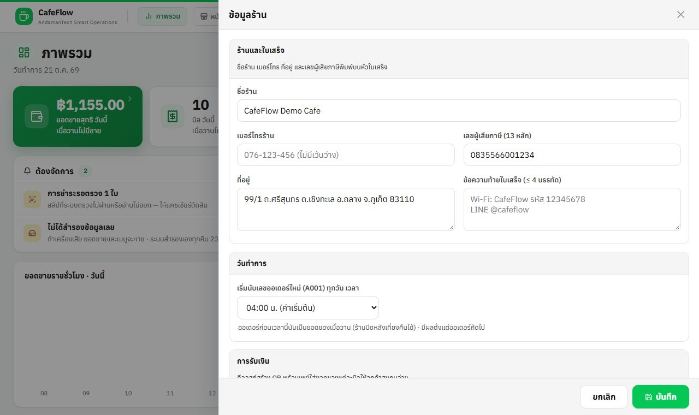
⚙ › ข้อมูลร้าน — ใส่พร้อมเพย์และชื่อบัญชีตรงนี้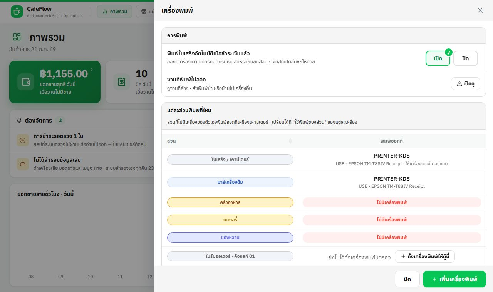
⚙ › เครื่องพิมพ์ — เพิ่มเครื่อง แล้วกดพิมพ์ทดสอบขั้นที่ 4 — เปิดจออื่น ๆ
- เอาไฟล์ screen-edge.bat ใส่ทุกเครื่อง แล้วดับเบิลคลิก
- ครั้งแรกจะถามที่อยู่เครื่องหลัก → พิมพ์ที่จดไว้ เช่น 192.168.1.50 แล้วกด Enter
- เลือกว่าเครื่องนี้คือจออะไร: 1 คีออสก์ · 2 แคชเชียร์ · 3 จอครัว · 4 จอเรียกคิว
จอเปิดเต็มจอ (ปิดด้วย Alt+F4)
| จอ | เข้าใช้ยังไง |
|---|
| 💵 แคชเชียร์ | เข้าระบบด้วยบัญชีแคชเชียร์ |
| 👨🍳 จอครัว | เข้าระบบด้วยบัญชีครัว |
📱 คีออสก์
📺 จอเรียกคิว | จับคู่ด้วยรหัส: จอขึ้นช่องให้ใส่รหัส → แอดมินเปิด ⚙ › อุปกรณ์ในเครือข่าย → กด จับคู่ ที่แถวเครื่องนั้น → ได้รหัส 6 ตัว (ใช้ได้ 10 นาที) → พิมพ์ที่จอ |
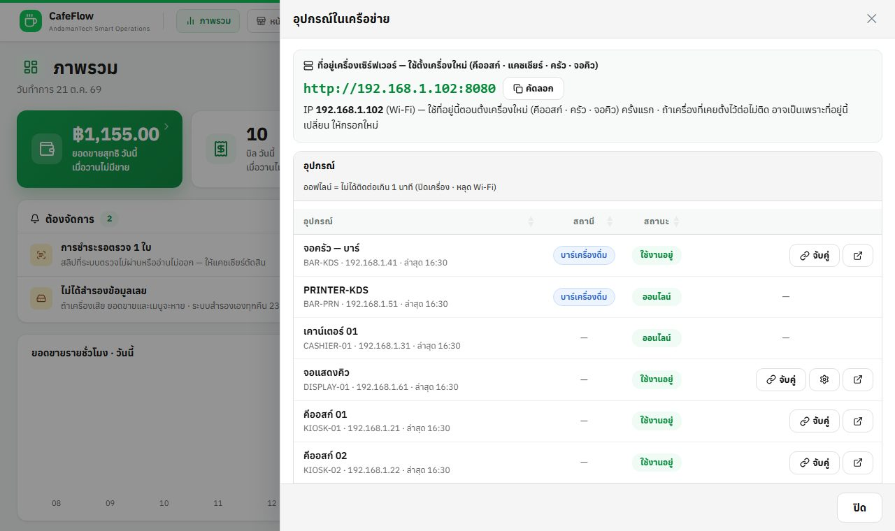
⚙ › อุปกรณ์ในเครือข่าย — ที่อยู่เครื่องหลักอยู่บนสุด · ปุ่ม "จับคู่" อยู่ท้ายแถวแต่ละเครื่อง
ห้ามเข้าระบบด้วยบัญชีพนักงานที่คีออสก์ — ลูกค้าจะเข้าถึงข้อมูลร้านได้
ขั้นที่ 5 — ทดลองก่อนเปิดร้านจริง
- หน้าแคชเชียร์ กด เปิดรอบ (ไม่เปิดรอบ คีออสก์รับออเดอร์ไม่ได้)
- สั่งที่คีออสก์ จ่ายด้วย QR โอนจริง 1 บาท → ส่องสลิปที่กล้อง ออเดอร์เข้าจอครัวเอง
- สั่งอีกใบ จ่ายเงินสดที่แคชเชียร์ → ครัวกด พร้อมเสิร์ฟ จอเรียกคิวขึ้นเลข + มีเสียง
- ดูว่าใบเสร็จและสลิปครัวพิมพ์ออก
- เปิดเมนูดูแลระบบ › ล้างข้อมูลขาย (ก่อนเปิดร้านจริง) — ลบออเดอร์ทดลอง เมนูและการตั้งค่ายังอยู่
เมนูดูแลระบบ (ไอคอน CafeFlow บนเครื่องหลัก)
ใช้บ่อยตรวจสถานะระบบ · รีสตาร์ทระบบ · ดูที่อยู่เครื่องเซิร์ฟเวอร์ (IP) · เปิดจอบนเครื่องนี้ · สำรองข้อมูลตอนนี้
นาน ๆ ครั้งอัปเดตระบบเป็นรุ่นใหม่ · ล้างข้อมูลขาย · ตั้งให้ระบบเปิดเองตอนเปิดเครื่อง · เปลี่ยนรหัสผ่านฐานข้อมูล · ติดตั้งซ้ำ/ซ่อมระบบ
สำรองข้อมูล
🌙
ทุกคืน 23:30ระบบสำรองเอง🔒
ทุกครั้งที่ปิดรอบระบบสำรองเอง💾
สัปดาห์ละครั้งคัดลอกโฟลเดอร์ backup ใส่ USB เก็บนอกร้าน
ไม่ได้สำรองเกิน 2 วัน หน้าภาพรวมจะเตือน · เครื่องพัง ให้ช่างกู้ตาม INSTALL.md
2ใช้งานแต่ละหน้า
เปิดเว็บ http://ที่อยู่เครื่องหลัก:8080 · เห็นเฉพาะเมนูที่บทบาทของคุณใช้ได้
🔑 เข้าสู่ระบบ / เปลี่ยนรหัส
- ใส่ชื่อผู้ใช้ + รหัสผ่าน → ระบบพาไปหน้างานของคุณเอง · อยู่ในระบบได้ 12 ชั่วโมง
- เปลี่ยนรหัส: กดชื่อตัวเองมุมขวาบน › เปลี่ยนรหัสผ่าน → ใส่รหัสเดิมให้ถูกก่อน แล้วค่อยใส่รหัสใหม่ (อย่างน้อย 6 ตัว)
- ลืมรหัส → ให้แอดมินตั้งใหม่ให้
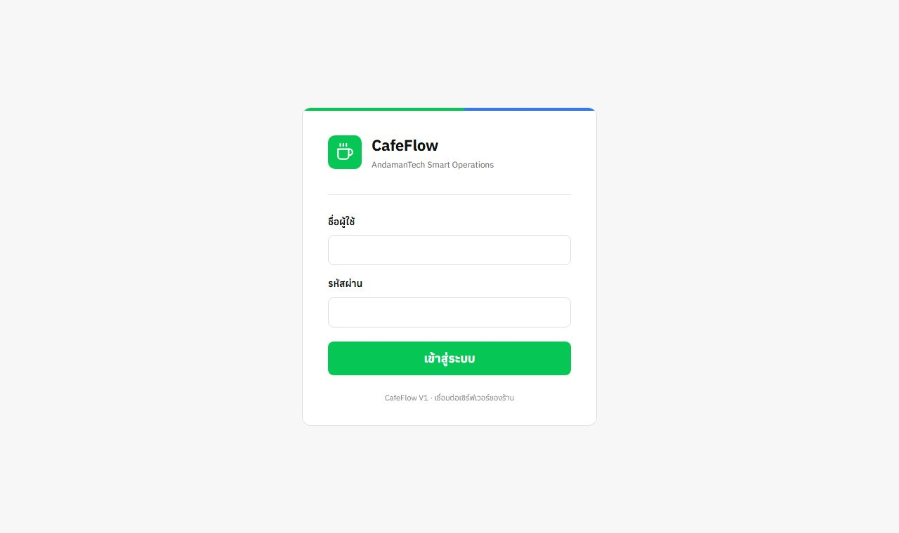
หน้าเข้าสู่ระบบ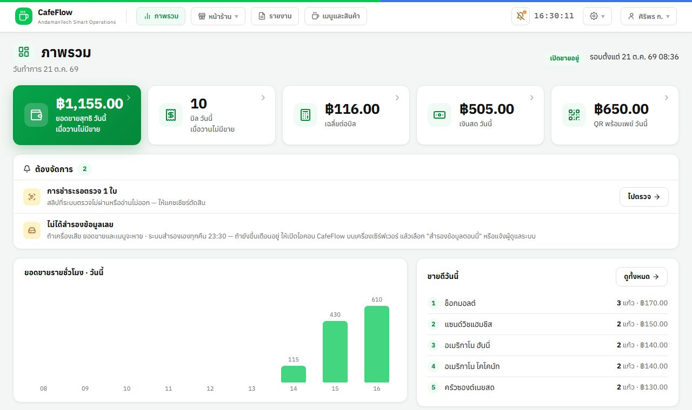
ภาพรวม — กล่อง "ต้องจัดการ" อยู่ใต้ตัวเลขยอดขาย📊 ภาพรวม
ยอดขายวันนี้ จำนวนบิล เงินสด/โอน เทียบเมื่อวาน · กราฟรายชั่วโมง · ขายดี 5 อันดับ
ดูกล่อง "ต้องจัดการ" ทุกเช้า — บอกเรื่องที่ต้องทำ เช่น ยังไม่เปิดรอบ · มีสลิปรอตรวจ · จอหลุด · ไม่ได้สำรองข้อมูล · สินค้าหมด
💵 แคชเชียร์
ยังไม่เปิดรอบ จะเห็นแค่การ์ด เปิดรอบ — ใส่เงินทอนตั้งต้นแล้วกด
| แท็บ | ทำอะไร |
|---|
| รอจ่าย · เงินสด | กด รับเงินสด → ใส่เงินที่รับ (หรือกดปุ่มแบงก์) → ดูเงินทอน → รับชำระ |
| รอโอน · QR | ลูกค้ากำลังโอนที่ตู้ — ไม่ต้องทำอะไร |
| เช็กสลิป | สลิปที่ระบบไม่แน่ใจ → ตรวจการชำระ → เปิดแอปธนาคารร้านดูว่าเงินเข้าจริง → เลือกเหตุผล → ยืนยันการชำระ หรือ ชำระไม่สำเร็จ |
| กำลังทำ | ครัวกำลังทำ — ดูอย่างเดียว |
| พร้อมรับ | ลูกค้ามารับ → ส่งมอบให้ลูกค้า · ยังไม่มา → เรียกซ้ำ |
สีผลตรวจสลิป🟩 ตรง · 🟥 ไม่ตรง · ⬜ อ่านไม่ออก
เพดานยืนยันแคชเชียร์ยืนยันสลิปเองได้ไม่เกิน 500 บาท เกินนั้นเรียกผู้จัดการ
แถบแดง "พิมพ์ไม่ออก"ดูกระดาษ/สาย แล้วกด ดูและพิมพ์ซ้ำ
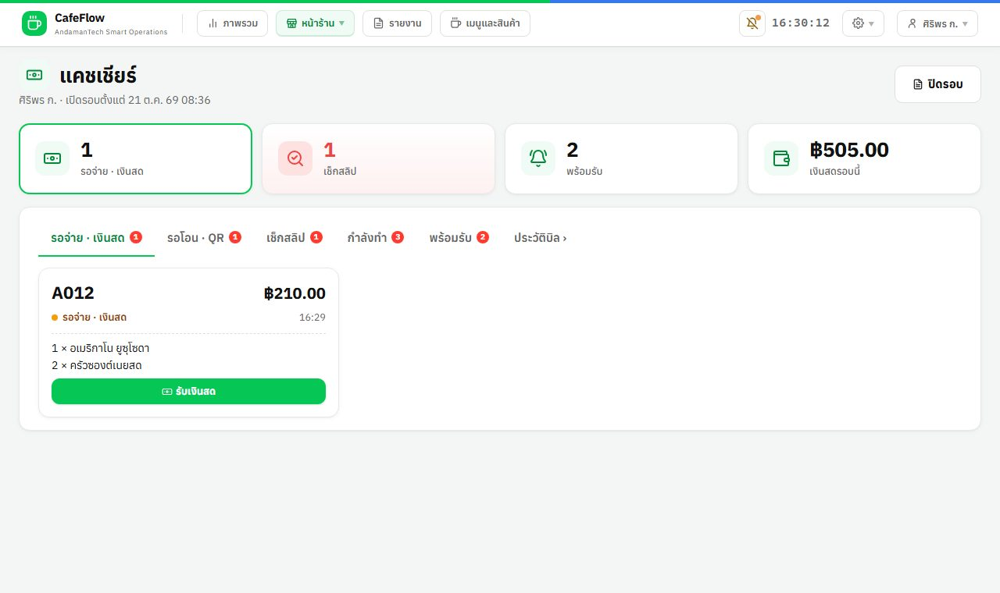
หน้าแคชเชียร์ — ตัวเลขบนสุดบอกงานค้าง กดแท็บเพื่อดูแต่ละกลุ่ม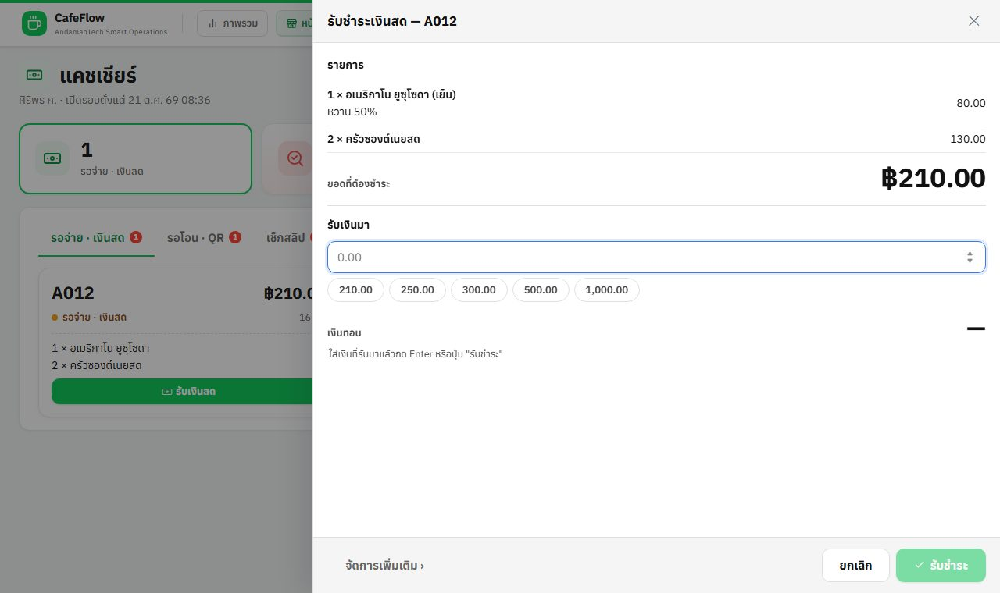
กด "รับเงินสด" — ใส่เงินที่รับหรือกดปุ่มแบงก์ แล้ว "รับชำระ"👨🍳 จอครัว
- เลือกแท็บสถานีของตัวเอง: บาร์เครื่องดื่ม · ครัวอาหาร · เบเกอรี่ · ของหวาน
- แตะรายการที่ทำเสร็จเพื่อติ๊ก · เวลาบนตั๋ว เหลือง = เกิน 3 นาที · แดง = เกิน 6 นาที
- ครบแล้วกด พร้อมเสิร์ฟ · กดผิด กด ย้อนกลับ ภายใน 5 วินาที
ออเดอร์ที่มีทั้งเครื่องดื่มและอาหาร จอคิวจะเรียกเมื่อทุกสถานีกดพร้อมเสิร์ฟแล้ว · "ต้องทำรวม" = ยอดรวมแต่ละเมนูที่ค้าง
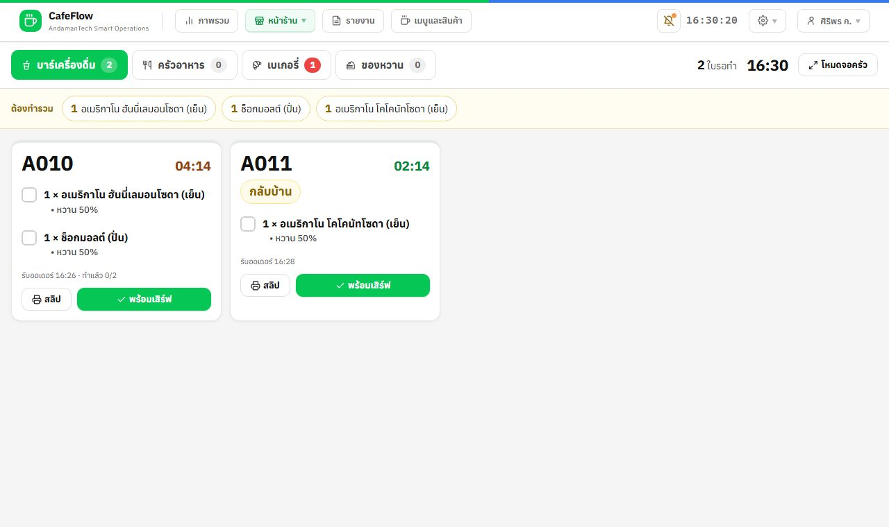
จอครัว — ตั๋วละใบ แตะช่องสี่เหลี่ยมเมื่อทำแล้ว ครบกด "พร้อมเสิร์ฟ"
🧾 ประวัติบิล
เลือกวัน ค้นด้วยเลขคิวหรือชื่อเมนู · กดบิลดูรายการ การจ่าย สลิป ทุกขั้นตอน · พิมพ์ใบเสร็จ / บัตรคิว / สลิปครัวซ้ำ
จัดการพิเศษ (แอดมิน/ผู้จัดการ · ต้องใส่เหตุผลทุกครั้ง):
ยกเลิก (ยังไม่ได้รับเงิน)ลูกค้าเปลี่ยนใจก่อนจ่าย
ยกเลิกบิลผิด/ซ้ำกดผิด · ออเดอร์ซ้ำ · ทดสอบ
ยกเลิก + คืนเงินลูกค้าทำผิด · ไม่ได้คุณภาพ — คืนเงินลูกค้าเองด้วย ระบบแค่บันทึก
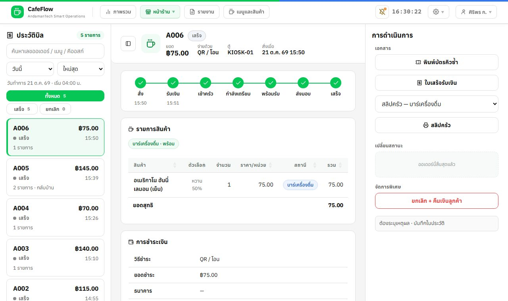
ประวัติบิล — ซ้าย: รายการบิล · กลาง: รายละเอียด · ขวา: พิมพ์ซ้ำและจัดการพิเศษ
🔒 ปิดรอบ / ปิดวัน
🧹1. เคลียร์ออเดอร์ยังไม่จ่าย → ยกเลิกทั้งหมด
จ่ายแล้ว → ปิดรายการทั้งหมด
➜
💵2. นับเงินในลิ้นชักใส่ตัวเลข ระบบบอกขาด/เกิน
➜
✅3. ปิดรอบเปลี่ยนกะ: เปิด "เปิดรอบใหม่ต่อทันที"
ปิดร้าน: ไม่ต้องเปิด
มีสลิปรอตรวจค้างอยู่ ปิดรอบไม่ได้ — ไปตรวจที่แท็บเช็กสลิปก่อน
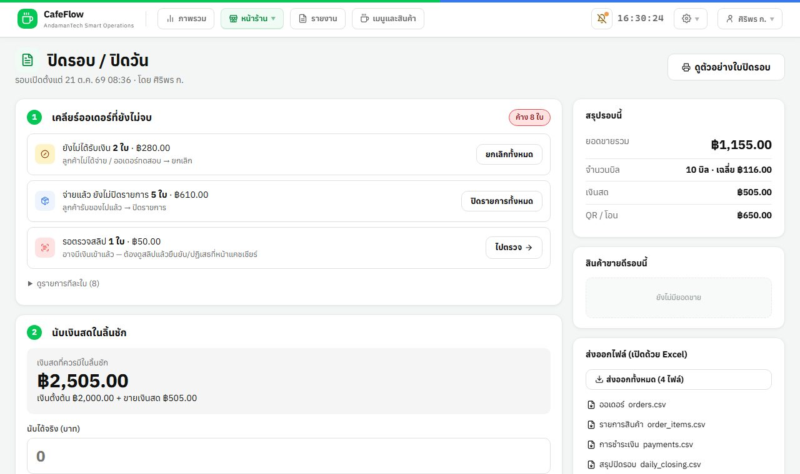
หน้าปิดรอบ — ทำตามขั้น 1 → 2 → 3 จากบนลงล่าง
☕ เมนูและสินค้า
- ปุ่มบน: หมวดหมู่ · กลุ่มตัวเลือก · เพิ่มรายการสินค้า · ปรับราคาหลายรายการพร้อมกัน
- ในฟอร์มสินค้า: ชื่อ รูป หมวด ราคาแต่ละแบบ (ร้อน/เย็น/ปั่น — แบบไหนไม่ขายเลือก "ไม่ขาย") เวลาขาย สต็อก สถานีที่ทำ ตัวเลือก
- สินค้าหมดวันนี้ — กดแล้วคีออสก์ขึ้นว่าหมดทันที
- เรียงลำดับบนคีออสก์: เลือกหมวดเดียว แล้วกดค้างที่รายการ ลากขึ้นลง
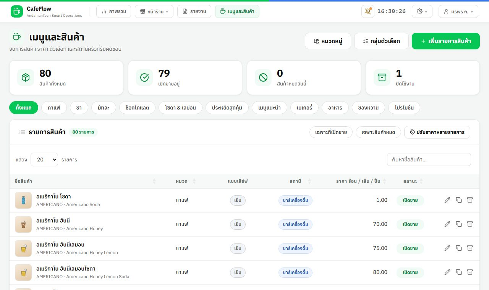
เมนูและสินค้า — แถบหมวดด้านบน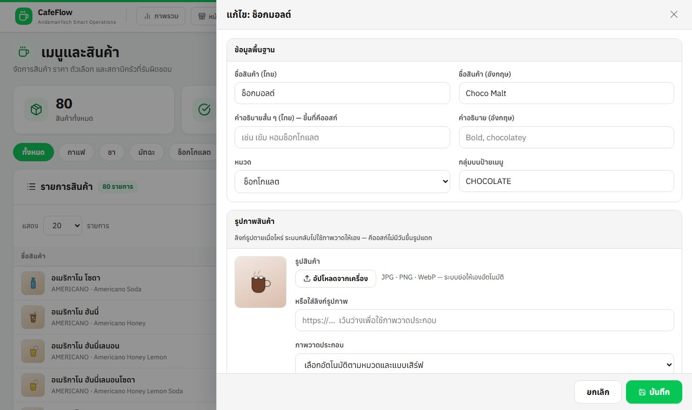
ฟอร์มสินค้า — ราคาแต่ละแบบ ตัวเลือก สถานี📈 รายงาน (แอดมิน/ผู้จัดการ)
เลือกช่วง วันนี้ · เมื่อวาน · 7 วัน · 30 วัน · เดือนนี้ · เลือกวันเอง — ส่งออกเป็นไฟล์ Excel (CSV) ได้
สรุปยอดขาย · ตามสินค้า · ตามหมวดหมู่ · ตามพนักงาน · ตามวิธีจ่าย · ใบเสร็จรับเงิน · ตามตัวเลือกเพิ่มเติม · ความแม่นการตรวจสลิป
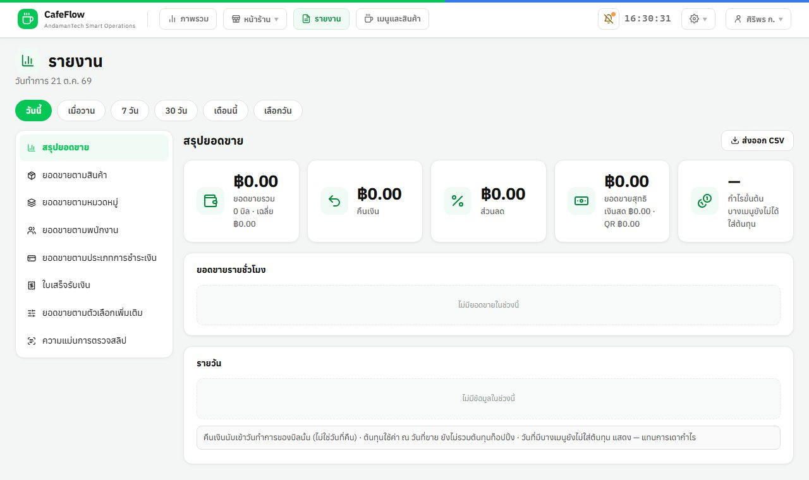
รายงาน — เลือกช่วงวันด้านบน เลือกรายงานด้านซ้าย
⚙ ตั้งค่า (แอดมิน/ผู้จัดการ)
| ข้อมูลร้าน | หัวใบเสร็จ · เวลาเริ่มวันใหม่ (เลขคิว A001) · พร้อมเพย์ · ชื่อ/เลขบัญชีไว้ตรวจสลิป |
| ผู้ใช้และสิทธิ์ 👑 | เพิ่มพนักงาน · ตั้งรหัสใหม่ · ปิดใช้งานคนที่ออก · เพดานยืนยันของแคชเชียร์ |
| ตั้งค่าเมนู 👑 | ซ่อน/แสดง และเรียงเมนูกับรายงาน |
| ตั้งค่าคีออสก์ | แนวจอ ขนาดจอ · กินที่ร้าน/กลับบ้าน · เวลารอแต่ละหน้า · เวลานับถอยหลัง QR |
| ตั้งค่าจอแสดงคิว | ธีมสว่าง/มืด · เมนูแนะนำ · เสียง · ข้อความวิ่ง |
| เครื่องพิมพ์ | เพิ่ม/แก้ · พิมพ์ทดสอบ · พิมพ์ใบเสร็จอัตโนมัติ · งานที่พิมพ์ไม่ออก |
| อุปกรณ์ในเครือข่าย | สถานะแต่ละจอ · จับคู่คีออสก์/จอคิว |
👑 = แอดมินเท่านั้น
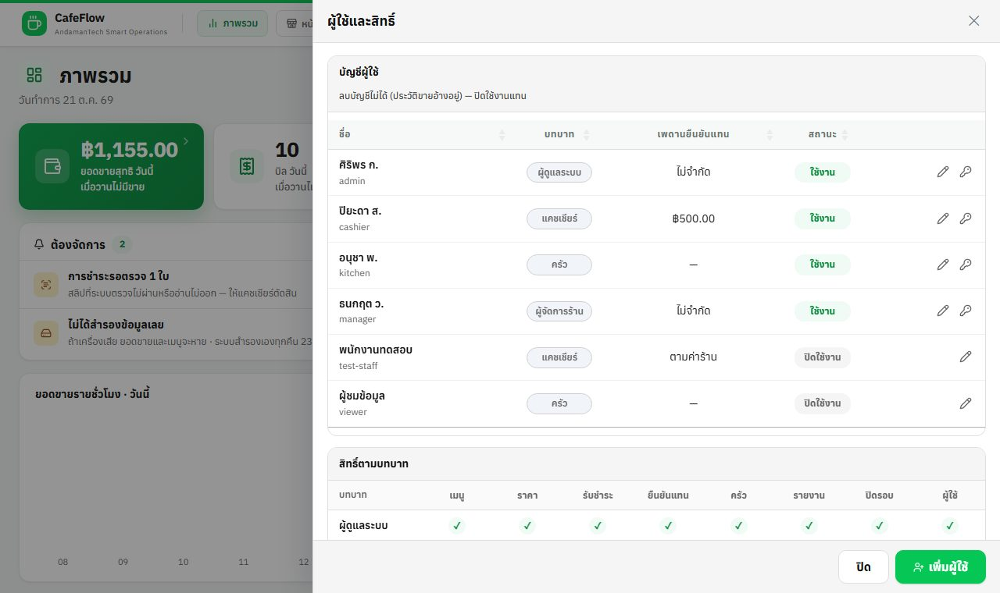
⚙ › ผู้ใช้และสิทธิ์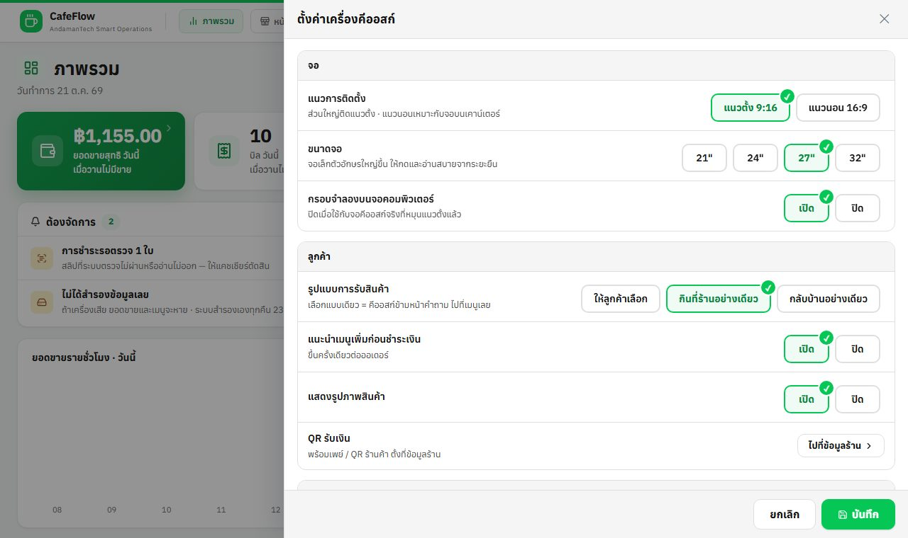
⚙ › ตั้งค่าคีออสก์📱 คีออสก์ (ฝั่งลูกค้า)
👆แตะจอ
➜
🍽️กินที่ร้าน / กลับบ้าน
➜
☕เลือกเมนูแบบ ตัวเลือก จำนวน
➜
🛒ตะกร้า
➜
💳เลือกวิธีจ่าย
📲
QR พร้อมเพย์ยอดเงินอยู่ใน QR แล้ว สแกนจ่ายได้เลย → เปิดสลิปในมือถือ ส่องกล้องที่ตู้ → ได้เลขคิว + บัตรคิว💵
เงินสดได้เลขคิว → ไปจ่ายที่เคาน์เตอร์
ปุ่มช่วยที่ตู้: แก้รายการ · จ่ายเงินสดแทน · แจ้งพนักงาน · เปลี่ยนภาษา TH/EN
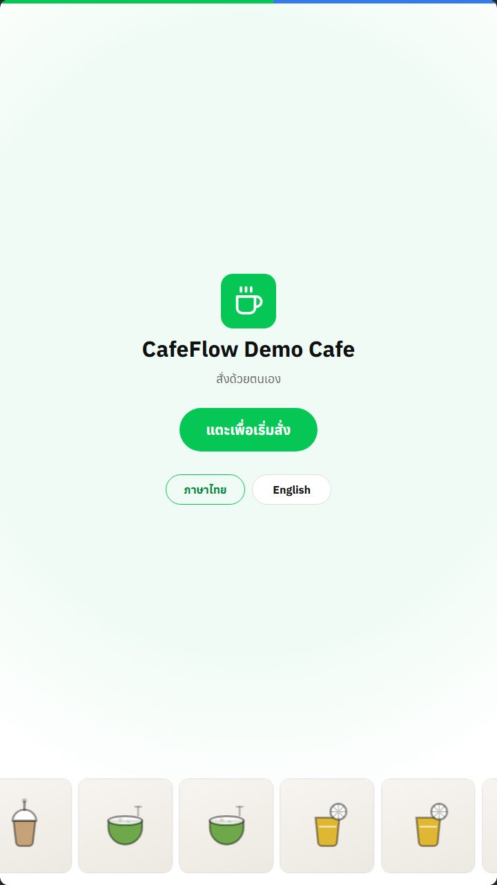
① แตะเพื่อเริ่มสั่ง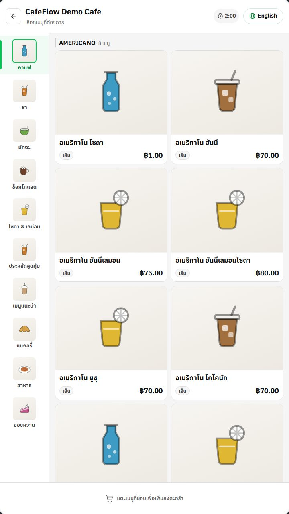
② เลือกเมนู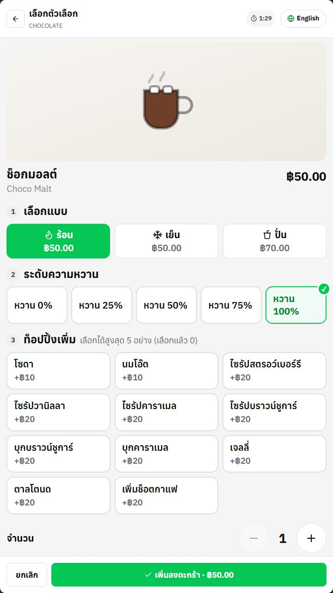
③ เลือกแบบ/ตัวเลือก → เพิ่มลงตะกร้า📺 จอเรียกคิว
ซ้าย = กำลังเตรียม · ขวา = พร้อมรับ (มีเสียงเตือน) · โชว์แค่เลขคิว ไม่มีชื่อหรือราคา
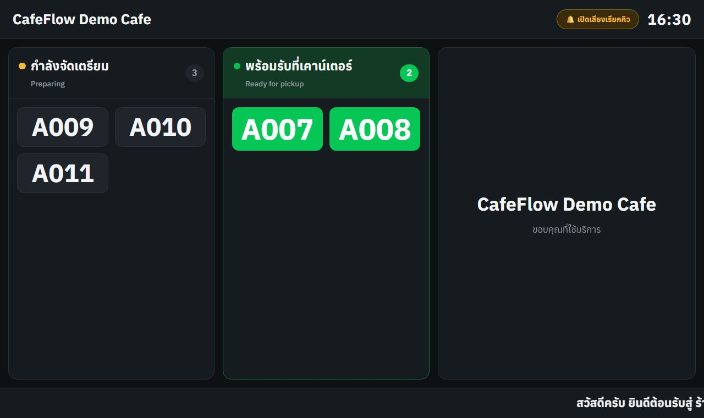
จอเรียกคิว — เลขย้ายจากซ้ายไปช่องสีเขียวเมื่อพร้อมรับ
3งานเดินยังไง
ตั้งแต่เปิดร้านจนปิด · ตั้งแต่ลูกค้าสั่งจนรับของ
หนึ่งวันของร้าน
🌅เช้าเปิดเครื่องหลัก
ระบบเปิดเองใน 3 นาที
➜
🔓เปิดรอบแคชเชียร์ใส่เงินทอน
➜
☕ขายทั้งวัน
➜
🔒ปิดรอบเคลียร์ · นับเงิน · ปิด
➜
💾สำรองข้อมูลระบบทำเอง
เปลี่ยนกะกลางวัน = ปิดรอบแล้วเปิด "เปิดรอบใหม่ต่อทันที"
ออเดอร์หนึ่งใบ
⬇
จ่าย QR พร้อมเพย์
📲 สแกน QR โอนเงินยอดอยู่ใน QR แล้ว
📸 ส่องสลิปที่กล้องตู้
🤖 ระบบตรวจสลิป 3 อย่างยอดตรง · เวลาตรง · เข้าบัญชีร้าน
✅ ผ่านครบไปครัวเอง
🤔 ไม่แน่ใจแคชเชียร์ดูแอปธนาคาร แล้วยืนยัน
จ่ายเงินสด
🎫 ได้เลขคิว
💵 จ่ายที่เคาน์เตอร์แคชเชียร์กด รับเงินสด
⬇
🧾จ่ายแล้วพิมพ์ใบเสร็จ + สลิปครัว
➜
👨🍳ครัวทำกด พร้อมเสิร์ฟ
➜
📺จอเรียกคิวขึ้นเลข + เสียง
➜
🤝ลูกค้ารับของแคชเชียร์กด ส่งมอบ
สลิปใบเดียวใช้ซ้ำกับออเดอร์อื่นไม่ได้ · ระบบไม่ได้ต่อกับธนาคาร — แคชเชียร์ควรเปิดแอปธนาคารร้านดูเงินเข้าเป็นระยะ
4ใครทำอะไร
ทุกคนมีบัญชีของตัวเอง ห้ามใช้ร่วมกัน — ระบบจดว่าใครกดอะไร
👑แอดมิน
เจ้าของร้าน · เข้าระบบแล้วเจอ หน้าภาพรวม
- ดู "ต้องจัดการ" ทุกเช้า
- ดูรายงานยอดขาย
- เพิ่ม/ปิดบัญชีพนักงาน ตั้งรหัสใหม่
- แก้เมนู ราคา ตั้งค่าร้าน
ทำได้ทุกอย่าง · มีคนเดียวที่จัดการผู้ใช้และตั้งค่าเมนูได้
🧑💼ผู้จัดการร้าน
ดูแลหน้าร้าน · เข้าระบบแล้วเจอ หน้าภาพรวม
- เปิด/ปิดรอบ นับเงิน
- ยืนยันสลิปยอดเกินเพดานแคชเชียร์
- ยกเลิกบิลผิด/ซ้ำ · คืนเงินลูกค้า
- แก้เมนู ราคา ปิดของหมด · ดูรายงาน
จัดการผู้ใช้ · ตั้งค่าเมนู
💵แคชเชียร์
ประจำเคาน์เตอร์ · เข้าระบบแล้วเจอ หน้าแคชเชียร์
- เปิดรอบ ตอนเช้า
- รับเงินสด
- ตรวจสลิป — ดูแอปธนาคารก่อนยืนยันทุกครั้ง
- ส่งมอบ ของ / เรียกซ้ำ
- ปิดรอบ ตอนเลิกกะ
ยืนยันสลิปเกิน 500 บาท · ยกเลิกบิลที่จ่ายแล้ว · คืนเงิน · แก้เมนู · ดูรายงาน
👨🍳ครัว
ทำเครื่องดื่ม/อาหาร · เข้าระบบแล้วเจอ จอครัว
- เลือกสถานีของตัวเอง
- ทำตามตั๋ว แตะติ๊กที่ทำแล้ว
- ครบแล้วกด พร้อมเสิร์ฟ
รับเงิน · แก้เมนู · ปิดรอบ
ตารางรวม
| ทำอะไร | 👑 แอดมิน | 🧑💼 ผู้จัดการ | 💵 แคชเชียร์ | 👨🍳 ครัว |
|---|
| รับเงินสด · ตรวจสลิป | ✓ | ✓ | ✓ | — |
| ยืนยันสลิปแทนระบบ | ✓ | ✓ | ≤ 500 บาท | — |
| เปิด / ปิดรอบ | ✓ | ✓ | ✓ | — |
| ยกเลิกบิลผิด · คืนเงิน | ✓ | ✓ | — | — |
| จอครัว | ✓ | ✓ | — | ✓ |
| ประวัติบิล | ✓ | ✓ | ✓ | ✓ |
| เมนู ราคา ของหมด | ✓ | ✓ | — | — |
| รายงาน | ✓ | ✓ | — | — |
| ตั้งค่าร้าน เครื่องพิมพ์ จับคู่จอ | ✓ | ✓ | — | — |
| ผู้ใช้และสิทธิ์ · ตั้งค่าเมนู | ✓ | — | — | — |
"ยืนยันแทน" = แคชเชียร์กดยืนยันเองว่าเงินเข้าแล้ว ทั้งที่ระบบตรวจสลิปไม่ผ่าน · ต้องเลือกเหตุผลทุกครั้ง · เพดาน 500 บาทแอดมินเปลี่ยนรายคนได้